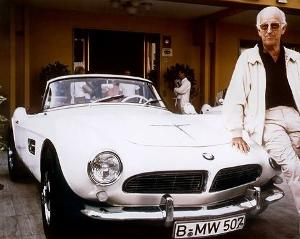
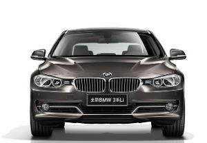

BMW公司
BMW公司的历史始于1916年，在中国大陆早年翻译为巴依尔。公司最初是一家飞机发动机制造商，1917年还是一家有限责任公司， 1918年更名巴伐利亚发动机制造股份公司并上市。始创人名吉斯坦-奥托在航空领域的高度成就，使他怀着很大的野心制造汽车，他后来这一决定，为汽车历史写下其中光荣的一页，那就是受到万千车迷爱戴的德国BMW车厂了。
车标含义
B.M.W.是巴伐利亚汽车制造厂的意思，标志的色彩和组合来自宝马所在地巴伐利亚州的州徽（在前面宝马标志的旁边）。宝马汽车公司是以生产航空发动机开始创业的，因此很多人以为标志代表旋转的螺旋桨，但事实并非如此，其实蓝白标记对称图形的意义非常简单，蓝白相间的图案是公司所在地巴伐利亚州的州徽，用来提醒宝马来自巴伐利亚州的纯正血统。宝马标志中间的蓝白相间图案，代表蓝天，白云和旋转不停的螺旋浆，喻示宝马公司渊源悠久的历史，象征该公司过去在航空发动机技术方面的领先地位，又象征公司一贯宗旨和目标。